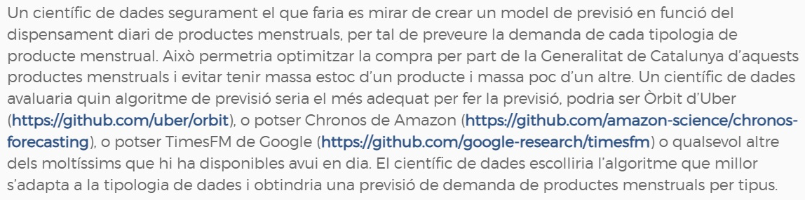
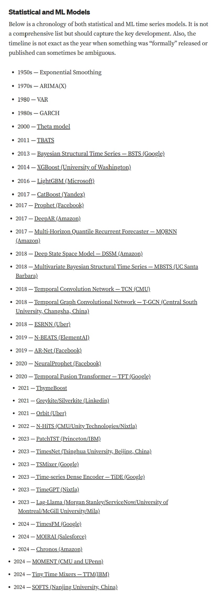

Idees esbojarrades
Idees
Creació de dades sintètiques de la renda a nivell municipal o fins i tot inferior
Previsió de sèries temporals
1. Creació de dades sintètiques de la renda
Què vull aconseguir?
El que vull és aconseguir és generar microdades de la renda de les persones residents als municipis o a les seccions censals.
Com fer-ho?
Generant dades sintètiques. Les dades sintètiques, són dades inventades, dades que no existeixen a la realitat i es generen a través d’un algoritme. En el cas de la renda el que es busca és crear dades que segueixin una distribució molt similar a les dades de la renda.
Exemple: edat de la població de Mataró
\[ f(x) = \begin{cases} p \cdot \lambda e^{-\lambda x}, & \text{si } x \sim \text{Exponencial}(\lambda), \\ (1 - p) \cdot \frac{x^{a-1} e^{-\frac{x}{\text{scale}_g}}}{\Gamma(a) \cdot \text{scale}_g^a}, & \text{si } x \sim \text{Gamma}(a, \text{scale}_g). \end{cases} \]
Combina les dades originals i generades en un sol data frame
Montecarlo
Com ho podem fer amb la renda?
Cal tenir present que la renda habitualment pot seguir les següents funcions de distribució:
Paretto
Weibull
Gamma
Pla A
Fer una petició a l’INE demanant la funció de distribució de la renda i els paràmetres dels 314 municipis de la província de Barcelona
Pros: tenir la distribució de cada municipi a partir de les dades originals de cada municipi
Contra:
Cost
Temps
Pla B
Fer una “estimació” de la funció de distribució de la renda de cada municipi i dels seus paràmetres. Com?
Fer una petició a l’INE demanant la funció de distribució de la renda i els paràmetres de les 50 províncies.
- Contra: cost econòmic (inferior al de demanar els 314 municipis de la província de Barcelona); temps (no sabem quan trigaran a donar aquesta informació, però segur que és inferior a la de demanar els 314 municipis de la província de Barcelona).
Fer un model que permeti “estimar” la funció de distribució de la renda de les províncies a partir de variables explicatives provincials procedents de l’atles de la renda de l’INE.
Les variables explicatives del model han d’estar disponibles també a nivell municipal o de secció censal.
\(Pareto(Albacete) = \hat\beta_0 + \hat\beta_1 \cdot \text{Renda mitjana}_{Albacete} + \hat\beta_2 \cdot \text{renda mediana}_{Albacete} + ...+ {\large \epsilon_{Albacete}}\)
\(Pareto(Àlaba) = \hat\beta_0 + \hat\beta_1 \cdot \text{Renda mitjana}_{Àlaba} + \hat\beta_2 \cdot \text{renda mediana}_{Àlaba} + ...+ {\large \epsilon_{Àlaba}}\)
\(Pareto(Alacant) = \hat\beta_0 + \hat\beta_1 \cdot \text{Renda mitjana}_{Alacant} + \hat\beta_2 \cdot \text{renda mediana}_{Alacant} + ...+ {\large \epsilon_{Alacant}}\)
\(Pareto(Barcelona) = \hat\beta_0 + \hat\beta_1 \cdot \text{Renda mitjana}_{Barcelona} + \hat\beta_2 \cdot \text{renda mediana}_{Barcelona} + ...+ {\large \epsilon_{Barcelona}}\)
…
…
…
… \(Pareto(Saragossa) = \hat\beta_0 + \hat\beta_1 \cdot \text{Renda mitjana}_{Saragossa} + \hat\beta_2 \cdot \text{renda mediana}_{Saragossa} + ...+ {\large \epsilon_{Saragossa}}\)
Utilitzar els valors dels coeficients \(\hat\beta_0\), \(\hat\beta_1\), \(\hat\beta_2\),…, \(\hat\beta_n\) i aplicar-ho a les variables explicatives dels municipis o seccions censals.
\(\hat\beta_0 + \hat\beta_1 \cdot \text{Renda mitjana}_{Sitges} + \hat\beta_2 \cdot \text{renda mediana}_{Sitges} + ... \rightarrow \widehat{\text{Pareto}}(\text{Sitges})\)
\(\hat\beta_0 + \hat\beta_1 \cdot \text{Renda mitjana}_{Granollers} + \hat\beta_2 \cdot \text{renda mediana}_{Granollers} + ... \rightarrow \widehat{\text{Pareto}}(\text{Granollers})\)
\(\hat\beta_0 + \hat\beta_1 \cdot \text{Renda mitjana}_{Vic} + \hat\beta_2 \cdot \text{renda mediana}_{Vic} + ... \rightarrow \widehat{\text{Pareto}}(\text{Vic})\)
Un cop tens la funció de distribució estimada de la renda del municipi es poden generar variables aleatòries que siguin de la mida del nombre d’habitants del municipi (o dels majors de 16 del municipi) com he fet amb les dades de l’edat.
Pros: permetrà personalitzar el llindar de pobresa (o de riquesa) o permetrà calcular indicadors a mida.
Contra:
no sé si és factible un model en el que la variable explicada estigui configurada per diferents valors (els paràmetres de la funció).
En un model de regressió hi ha una variable explicada (que conté un valor per cada cas) vs diferents variables explicatives.
En la meva proposta la variable explicada és una funció, la qual habitualment conté diferents valors corresponents als diferents paràmetres que configuren la funció, i no sé si això és possible.
IDEA: es podria entrenar a ChatGPT?
En el cas que el punt anterior fos factible, no sé si les variables explicatives que hi ha a l’Atles de distribució de la renda de l’INE seran suficients per aconseguir un model amb poc error.
Recordar que es necessita que les variables que s’utilitzen a nivell de la província han d’estar disponibles a nivell del municipi o de la secció censal.
Pla C
Fer una “estimació” de la funció de distribució de la renda de cada municipi i dels seus paràmetres. Com?
Utilitzar les microdades de l’INE de l’enquesta de condicions de vida d’on s’estima la renda que s’utilitza i segueix els criteris de l’Eurostat.
Cal tenir present que les dades de l’enquesta de condicions de vida té desagregació a nivell de comunitat autònoma.
De l’enquesta de condicions de vida s’ha d’extreure la funció de distribució de la renda de cada comunitat autònoma amb els respectius paràmetres.
Aplicar els punts del 2 al 4 del pla B.
Els Pros i Contra seran els mateixos que els del pla B, amb l’afegit que no tinc clar que el càlcul de la renda de l’enquesta de condicions de vida sigui igual o similar a la de l’Atles de distribució de la renda.
Pla D
Carregar a ChatGPT totes les variables dels municipis de la província de Barcelona de l’Atles de distribució de la renda de l’INE, i dir-li que són dades de renda i que sabem que segueixen una distribució de Paretto, i que volem que ens digui per cada municipi quins són els paràmetres de la distribució de Paretto a partir de les dades que li hem donat.
El perquè d’aquest projecte
En primer lloc, el fet d’obtenir microdades sintètiques de la renda de cada municipi, i si és possible de cada secció censal, ens permetrà calcular indicadors a mida.
Exemples:
Quanta gent està del municipi X està per sota del llindar del 60% de la mediana de la província de Barcelona (o de l’àrea metropolitana de Barcelona)?
Quin percentatge de la població ha de destinar més d’un 33% de la seva renda a la compra d’un habitatge al municipi X?
En segon lloc, aquest projecte és un repte. Fins on jo sé a ningú ha generat dades sintètiques de la renda a partir de les dades de l’Atles de distribució de la renda, i crec que la proposta és innovadora.
Potser en el desenvolupament del projecte ens n’adonem que no és factible aconseguir-ho. Però si aconseguim resultats positius, a la XODEL ens donaria més visibilitat.
2. Previsió de sèries temporals
Tot va començar amb aquest article: Data Lake o Data Warehouse?
I més concretament d’aquest paràgraf

Llegint-ho aquest paràgraf dóna la sensació que sé de que parlo del tema d’algoritmes per fer previsió de sèries temporals, però en realitat no en tinc ni idea. M’interessa el tema, però en sé el just, sé el mínim de models ARIMA.
Aquests algoritmes que anomeno a l’article els trec d’aquest altre article de Medium:
A brief history of time series models
És un article escrit al 2022, però que es va actualitzant amb els nous algoritmes de previsió de series temporals. Jo crec que s’actualitza un parell o tres de vegades l’any.
El més interessant per a mi de l’article és aquesta taula.

Revisant-me en més calma la taula i rellegint l’article, vaig fixar-me amb TimeGPT.
Evidentment el fet de posar GPT és el que em va cridar l’atenció, i he investigat una mica més sobre TimeGPT.
TimeGPT és una “intel·ligència artificial” generativa però de sèries temporals de l’empresa Nixtla amb seu a San Francisco.
TimeGPT està entrenat amb més de 100 mil milions de valors. El seu ús principal és per fer previsions i per detecció d’anomalies. Com passa amb ChatGPT, amb TimeGPT pots fer fine-tuning, és a dir, pots ajustar l’entrenament de la IA.
Inicialment es va construir per accedir-hi a través de Python, però ara ja hi ha disponible un paquet d’R (nixtlar).
No és una eina opensource. És una eina de pagament, però tenen una versió gratuïta de fins a 50 crides al mes (plans).
No l’he utilitzat però sembla molt fàcil de fer servir, i segons diuen ells no cal tenir cap gran coneixement per utilitzar TimeGPT (bé com a mínim has de saber algo de python o d’R).
El meu pla
Fer previsió de l’atur, i potser contractació. Si m’animo potser ho provo per consum elèctric a la ciutat i a l’Ajuntament de Mataró, que són sèries horàries.
Com?
Amb TimeGPT
El paquet “forecast” d’R i més concretament la funció auto.arima
Mirant d’adaptar el codi d’R d’aquest article: https://datageeek.com/2024/11/13/time-series-machine-learning-shanghai-composite/